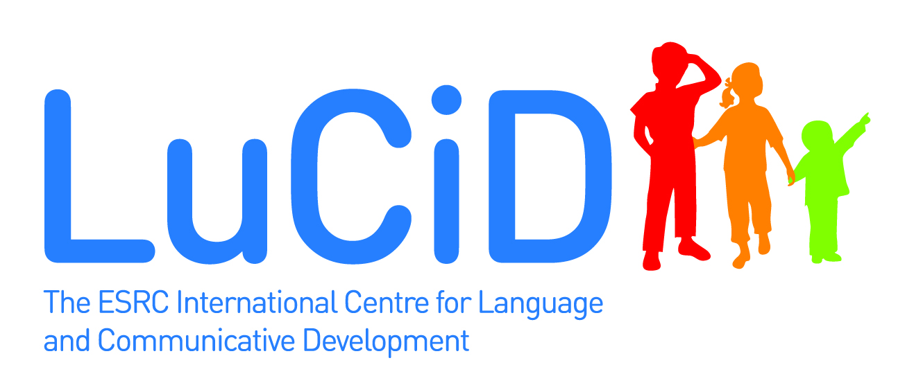

This browser allows you to examine various statistics to identify which corpus to use.
This page allows you to generate utterances using ngram statistics in different corpora.
Use the distribution of words before or after a word to classify a set of words
This program shows how well different statistics generate adult and child utterances in typologically-different languages.
This program produces csv files for various CHILDES corpora
This program allows you to perform simple analyses on CHILDES corpora
This allows you to download 1- to 4-grams for various CHILDES corpora
This work is part of the toolkit project within the ESRC International Centre for Language and Communicative Development (LuCiD) (http://www.lucid.ac.uk/, ESRC grant [ES/L008955/1]). Please contact Franklin Chang with any questions.
To cite these tools, please use this reference: Chang, F. (2017) The LuCiD language researcher’s toolkit [Computer software]. Retrieved from http://www.lucid.ac.uk/resources/for-researchers/toolkit/
Last Update: